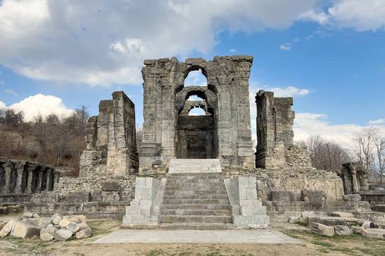

Martand Sun Temple

Description
Ruins of the Martand Sun Temple stand as a striking reminder of ancient architecture and religious life. The site sits on a gentle plateau with wide views.
History
Constructed in the 8th century, the temple was an important center of worship. Though partly ruined, its stone pillars and layout reveal a sophisticated architectural tradition.